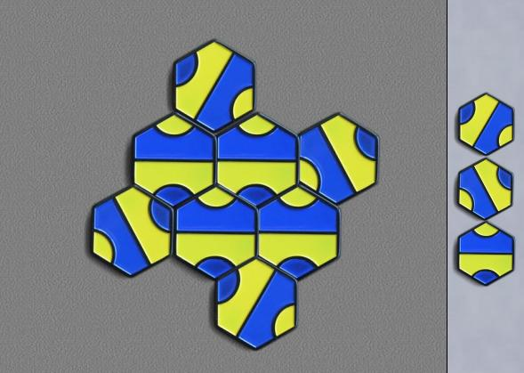

Palago
Palago est un jeu de pose de tuiles à motifs conçu par Cameron Browne.
Il utilise un ensemble de tuiles hexagonales identiques pouvant paver un plan avec un motif continu. Le but du jeu est de construire un motif fermé de votre couleur.
Les règles officielles se trouvent ici, mais en résumé, chaque joueur pose deux tuiles à chaque tour, la première au contact du pavage existant, la seconde adjacente à la première. Les petites enceintes de « taille 3 » ne comptent pas.
Robots : même Dumbot ne manquera pas une victoire facile, mais les meilleurs joueurs affirment que Smartbot et Bestbot permettent des parties intéressantes, bien qu'ils les battent.
|

|